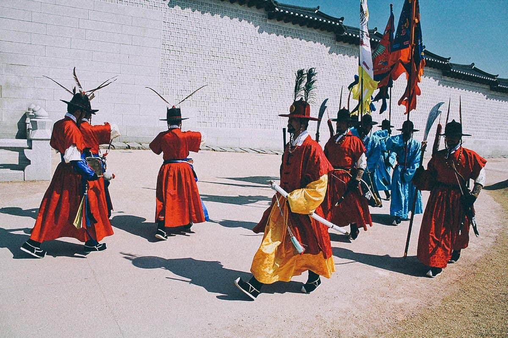
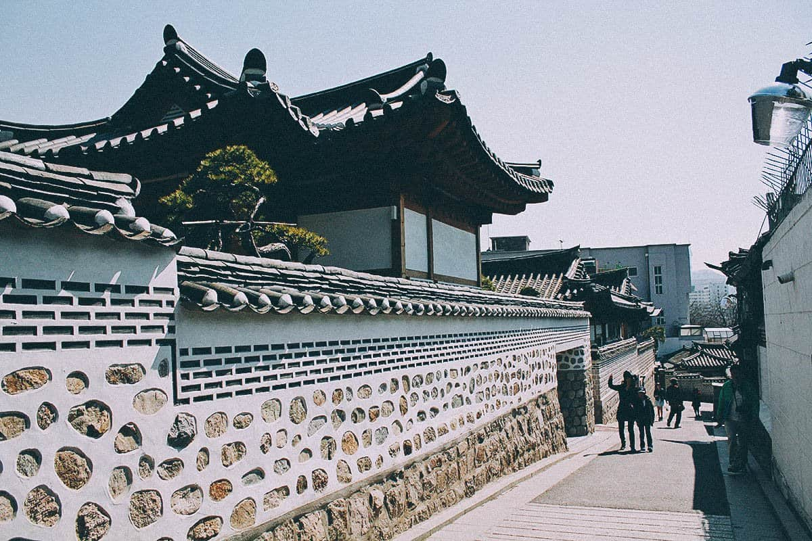
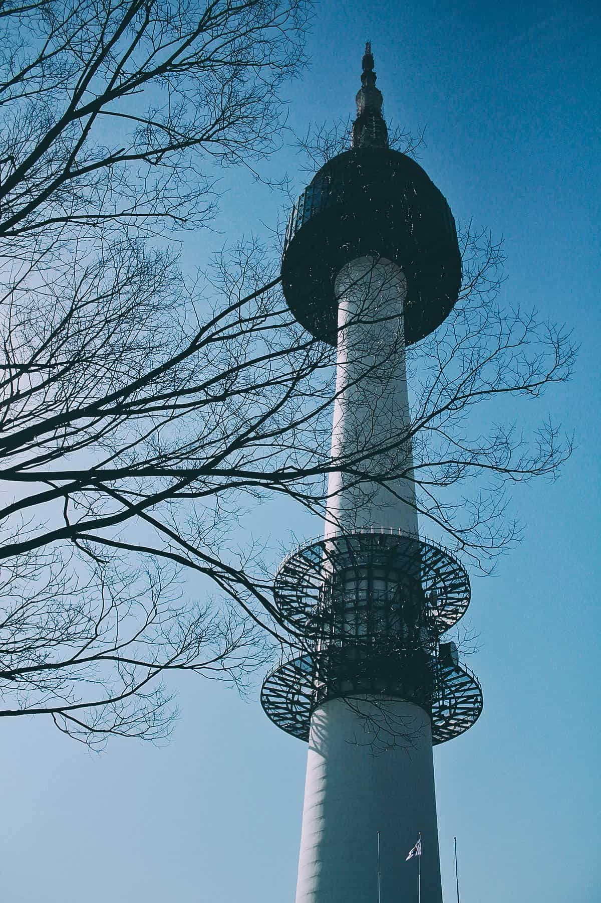
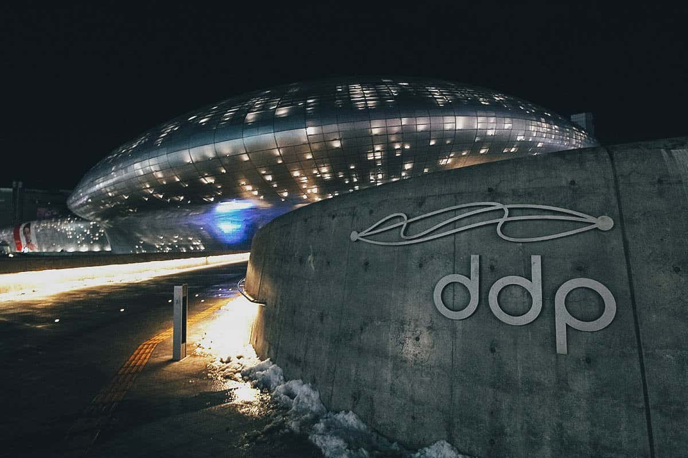
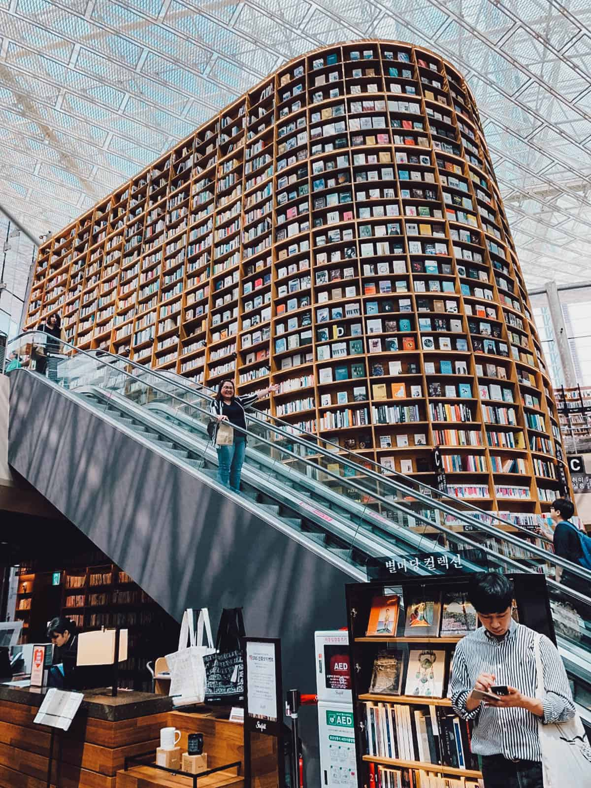

GUIDE TO SEOUL
Fashion- and technology-forward but also deeply traditional, this dynamic city mashes up palaces, temples, cutting-edge design and mountain trails, all to a nonstop K-Pop beat.
Seoul is a dynamic city fearlessly forging a path into the future while faithfully preserving its proud past. Home of the world’s fastest internet and some of Asia’s oldest urban enclaves, where 100-floor skyscrapers soar above thousand-year-old Buddhist temples. A harmonious blending of old and new beats at the heart of this world-class destination. Between the balance and the bibimbap comes the ultimate urban excursion.
Don't miss
- The cuisine in Seoul
- "Myeongdong" is the best place to exchange your currency.
- Visit Royal Palaces
How to get there
International flights fly directly into Seoul Airport from many global hubs. From the airport it’s an easy 30-minute taxi or train ride to the city centre.
Useful tips
- Book your tickets for the autumn months
- Travel between September and November, when the city experiences dry
- Visit a local visitor information centre for more detailed info on the area.
THINGS TO DO AND TOP ATTRACTIONS IN SEOUL

Suggested Length of Visit: 1-3 hrs per palace / Admission: KRW 1,000-3,000 per palace
The Five Grand Palaces
There are five Joseon Royal Palaces in Seoul – Gyeongbokgung, Changdeokgung, Changgyeonggung, Gyeonghuigung, and Deoksugung. We visited only the first two but you can easily visit all five if you like. Gyeongbokgung and Changdeokgung are the biggest and arguably the most beautiful of the five. Gyeongbokgung was the primary palace and one of just two (the other being Deoksugung) where you can watch the changing of the Royal Guard. Equally impressive is Changdeokgung which is a UNESCO Heritage Site and home to the Huwon or “Secret Garden”.

Roar and Snore, Taronga Zoo Sydney, New South Wales
Bukchon Hanok Village
As ultramodern a metropolis as Seoul is, it’s nice to find a place like this right in the middle of the city. Bukchon Hanok Village is an atmospheric labyrinth of narrow alleyways and traditional Korean houses called hanoks. Exploring its network of streets will take you back in time and give you a glimpse of what Seoul was like 600 years ago. Like the royal palaces, it’s one of the best places in Seoul to rent a hanbok and level up your Instagram game.

Suggested Length of Visit: 1-2 hrs / Admission: KRW 11,000
N Seoul Tower
When it comes to great views, this place towers above the competition. Standing 480 meters (1,575 ft) above sea level, N Seoul Tower’s observation deck is the best place to get bird’s eye views of the city. N Seoul Tower is located on Mt. Namsan and accessible via road or cable car, though most tourists will opt for the latter. You can purchase tickets to the observatory at the gate.

Suggested Length of Visit: 2-3 hrs / Admission: FREE but some exhibits may charge for admission
Dongdaemun Design Plaza (DDP)
This place is incredible. If you like design, any kind of design, then you need to put Dongdaemun Design Plaza (DDP) on your itinerary. It’s like a museum, design supermarket, and space ship all rolled into one. DDP was designed by the late Zaha Hadid, the renowned architect who created the 2012 Olympic aquatic centre in London and the Guangzhou Opera House in China. I suggest devoting several hours to this place if you can. Be sure to come back at night as well when the building really comes to life.

Suggested Length of Visit: 30 mins – 1 hr / Admission: FREE
Jogyesa Temple
Jogyesa Temple is one of the most important Buddhist temples in Korea. It’s the head temple of the Jogye Order of Korean Buddhism and serves as the main venue for many Buddhist events, rituals, lectures, and ceremonies.

Suggested Length of Visit: 2-3 hrs / Admission: FREE
COEX Mall Library
COEX Mall in the Gangnam district has become Insta-famous in recent years, all because of this beautiful library located in the middle of the mall. Starfield Library is an open-air public library that features hundreds of books and magazines. It’s stunning architectural shelf of books has made it into one of the most popular picture-taking spots in Seoul.